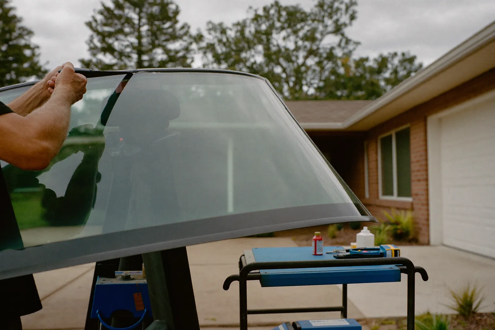

Old glass out, pinchweld treated, new windshield set in a single continuous urethane bead — on your driveway.
Call Now for a Free QuoteTell us the vehicle and the damage — we’ll come back the same working day.
Prefer to talk? Call (256) 699-0625

Windshield replacement in Decatur is a structural repair, not a cosmetic one. The glass is bonded to the body and does real work: it helps the roof resist crushing in a rollover and gives the passenger airbag a surface to deploy against. Done properly it takes an hour or two on your driveway, plus a cure window before the car is safe to drive.
The old glass comes out with a cold knife or a wire, then the existing urethane is trimmed back to a thin, even bed rather than scraped to bare metal. That leftover layer is deliberate — fresh urethane bonds better to old urethane than to paint.
Any rust on the pinchweld gets treated before anything else happens. Bonding new glass over rust is the single most common reason a windshield leaks or whistles a year later, and it is invisible once the glass is in.
Then primer on the frit band and the pinchweld, one continuous bead of urethane, and the glass set in a single movement. Once it touches, it does not get repositioned. Cowls, mouldings and wipers go back on, and you get a specific safe drive-away time.
Because a chip is a stress concentrator and glass moves with temperature. A cold North Alabama morning contracts the outer layer while a defroster on full heat expands the inner one, and the fracture takes the path of least resistance. Summer does the same thing in reverse: hot glass, cold air conditioning.
This is why a chip that sat quietly for a month suddenly runs eight inches on the drive to work. Nothing hit it. The temperature differential did the work the rock started.
Four things decide what a replacement costs on your vehicle. None of them are guesswork — give us the year, make and model and we will price it on the phone.
| Factor | Effect |
|---|---|
| OEM vs aftermarket glass | Factory glass costs substantially more than the aftermarket equivalent on the same vehicle |
| Built-in options | Rain sensor, heated wiper park, acoustic laminate or a head-up display each narrow the glass that fits |
| ADAS calibration | Static costs more than dynamic, and some vehicles need both procedures |
| Pinchweld rust | Has to be treated, not covered — more common on older trucks |
Aftermarket glass is made to the same safety standards and fits the great majority of vehicles without any issue. For most cars on the road it is the sensible choice and the reason a replacement is affordable at all.
OEM glass is worth the premium in narrower cases: a vehicle with a head-up display, where the projection layer has to be exactly right; a car with a camera system that is fussy about optical clarity in the camera window; and a newer or leased vehicle where you want the factory part on record.
Anyone who tells you aftermarket glass is universally unsafe is selling OEM. Anyone who says OEM never matters has not fought a HUD ghosting complaint. Ask which one is being quoted and why.
Not sure a replacement is what you need? Compare it against chip and crack repair.
Plan on an hour to two hours on site, plus cure time before the car is safe to drive. The safe drive-away window runs from 30 minutes to about two hours depending on the urethane and the weather, and we give you the specific number rather than a vague estimate.
Not immediately. The urethane needs to reach enough strength to hold the glass in a crash, which is the whole reason a safe drive-away time exists. Leave the tape on for a day, avoid slamming doors, and crack a window when it is hot so pressure does not push against fresh adhesive.
Not if the pinchweld was prepped properly. Leaks almost always trace back to two shortcuts: bonding over rust, or a urethane bead that was broken rather than continuous. Both are invisible once the glass is set, which is why prep is where the quality of the job actually lives.
No. You choose who works on your vehicle. Insurers have preferred networks and will steer you toward them, but the decision is yours, and the shop matters more than the glass brand on a job where prep determines the outcome.
Yes for most vehicles — it is built to the same federal safety standards. The cases where factory glass genuinely earns its premium are narrower: head-up displays, some camera systems that are sensitive about optical clarity, and newer or leased vehicles where you want the original part documented.
Most jobs are done in your driveway or the work parking lot. Tell us the vehicle and the damage and we’ll quote it on the spot.